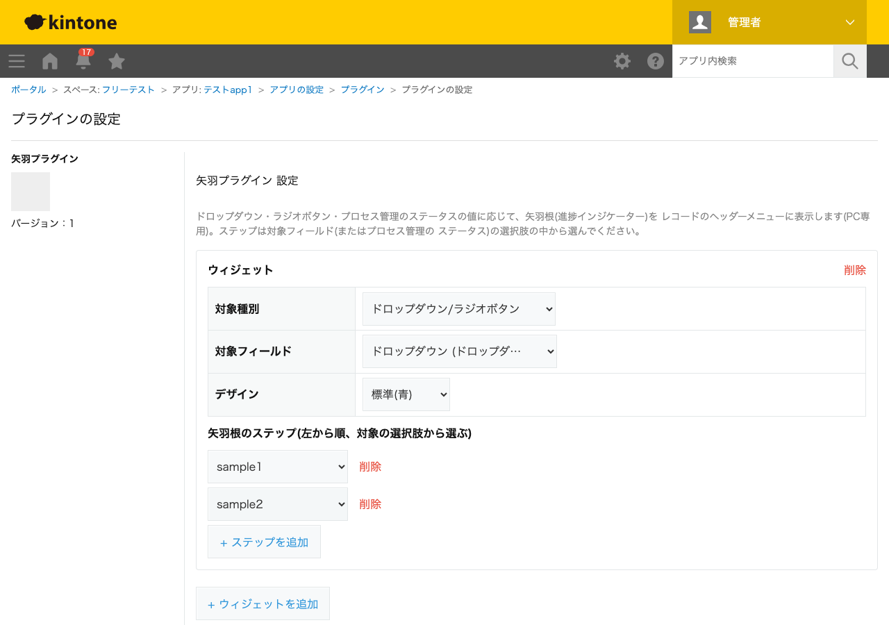

GovAppsプラグイン 安全性を確認できる無料kintoneプラグイン集
ドロップダウン・ラジオボタン・プロセス管理のステータスの値に応じて、矢羽根(チェブロン状の矢印を 並べた進捗インジケーター)をレコードのヘッダーメニューに表示するプラグインです。現在値より前の ステップは「完了」、現在値と一致するステップは「現在」、それ以外は「未着手」として色分けされ、 レコードの進捗状況がひと目で分かるようになります。矢羽根のステップは対象フィールド(またはプロセス 管理のステータス)の選択肢一覧から選ぶだけで設定でき、自由入力によるタイプミスの心配がありません。
「未着手・対応中・完了」のような対応状況を管理するドロップダウン/ラジオボタンフィールドがある場合、その選択肢の一部(または全部)を並び順どおりに矢羽根として設定できます。選択肢に「保留」のような進捗の並びに含めたくない値がある場合は、矢羽根のステップから除外できます。
対象種別で「プロセス管理のステータス」を選ぶと、アプリのプロセス管理で設定済みのステータス名がステップの選択肢として表示されます。承認フローなどプロセス管理で運用しているアプリでも、標準のステータス表示に加えて視覚的な矢羽根で進捗を強調できます。
ウィジェットは複数追加できるため、「対応状況」と「承認状況」のように異なるフィールドの進捗を、それぞれ別の矢羽根として同時に表示できます。ウィジェットごとにデザイン(配色プリセット)も個別に選べます。
矢羽根はレコードの追加・編集・詳細画面のヘッダーメニュー領域(PC専用)に表示されます。このAPIに対応するモバイル向けAPIが存在しないため、本プラグインはモバイル画面では動作しません。
kintoneセキュアコーディングガイドラインに沿って実装時にチェックしています。特に重要な点は次のとおりです。
kintone.app.getStatus())がプラグイン設定画面では利用できないため、kintone自身への呼び出し専用の内部ラッパーkintone.api()経由でREST API(GET /k/v1/app/status.json)を使用します。それ以外(対象フィールド一覧の取得・矢羽根の描画先取得)はすべてJavaScript APIのみで完結し、生のfetch/XMLHttpRequestは使用していません。外部サーバーへの通信は一切行わず、外部ライブラリも使用していません。innerHTMLではなくtextContentへの代入のみを使用しており、値に特殊文字が含まれていてもDOMに構造として解釈されません。詳細な確認項目・確認日は下記GitHubのチェックリストに全項目を掲載しています。

このプラグインは、レコードの追加・編集・詳細画面の表示ではREST APIを一切実行しません(表示中の
レコードのデータのみで矢羽根を描画します)。プラグイン設定画面を開いたときのみ、対象種別に
「プロセス管理のステータス」が選べるよう、ステータス名一覧を取得するREST API
(GET /k/v1/app/status.json、内部向けラッパーのkintone.api()経由)を
1回実行します。設定画面を開かない限り消費されません。